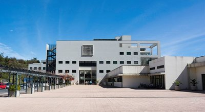

UMa 25 anos
Com o povoamento do arquipélago da Madeira, ao longo do século XV foram
sendo montadas nas várias paróquias escolas de ler e a primeira instituição de ensino nacional surgiu nos meados do século seguinte,
por carta régia de D. Sebastião, datada de 20 de Agosto de 1569, que criou o Colégio dos Jesuítas do Funchal. Em 1599, iniciava-se a construção do grande edifício do Colégio,
no centro da cidade, onde hoje se encontra instalada a Reitoria da Universidade da Madeira. Ao mesmo tempo era igualmente instalado o Seminário Diocesano e,
nos meados do século XVIII, com a extinção da Companhia de Jesus, no antigo Colégio, em 1768, ainda viria a funcionar Aula de Geometria e Desenho, essencialmente dedicada ao ensino militar.
Nos inícios do século seguinte surgiria a primeira instituição universitária: a Escola Médico-Cirúrgica do Funchal. As primeiras atividades de uma aula dessa natureza datam de 1816,
com os trabalhos para o novo regimento da Santa Casa da Misericórdia do Funchal aprovado três anos depois. Em 1824 era pedido a Lisboa para se ampliar esta aula para uma Aula de Cirurgia Operatória,
ampliada pelo decreto de 1836, que determinava a abertura de escolas médico-cirúrgicas em todas as capitais dos distritos ultramarinos.
Foi encerrada nos primeiros meses da República, por decreto de 11 de Novembro de 1910. Na sua existência de mais de 73 anos, esta escola veio a formar 250 médicos, inclusivamente,
em 1902, duas médicas, que exerceram clínica em Portugal e no estrangeiro.
A Universidade da Madeira

Foi um Despacho conjunto de 1983 da Secretaria de Estado do Ensino Superior e da Secretaria Regional da Educação,
então tutelada pelo Dr. Eduardo Brasão de Castro, que criou “uma comissão com vista ao estudo da viabilidade
de criação e funcionamento de uma universidade na Região Autónoma da Madeira e/ou outras alternativas institucionais”.
Essa comissão apresentou, em 1985, um “Estudo sobre a Viabilidade da Universidade da Madeira” contrapondo ao modelo napoleónico de Universidade
um outro pressupostamente mais adaptado à realidade da Madeira. Três anos mais tarde, através do Decreto-Lei no 319-A/88, de 13 de Setembro de 1988,
nascia a Universidade da Madeira, fazendo parte da primeira Comissão Instaladora o Vogal Presidente Prof. Doutor Raúl de Albuquerque Sardinha, os Vogais Prof.
Doutor Fernando Santos Henriques e Prof. Doutor José Luís Morais Ferreira Mendes e a Administradora Dra. Ana Isabel de Portugal Almada Cardoso.
Com a homologação dos Estatutos da Universidade por Sua Excelência o Senhor Ministro da Educação, Prof. Doutor Marçal Grilo, no Anfiteatro do Edifício do Colégio,
a 13 de Maio de 1996 e consequente eleição do responsável para os próximos dois anos, a Universidade da Madeira entrou numa nova e crucial fase da sua vida.
Uma fase que deverá ver a Universidade afirmar-se no contexto nacional, como Universidade de pleno direito, bem como atingir, ao seu nível interno,
as variações mínimas para enfrentar os grandes desafios que se perfilam para qualquer instituição de ensino superior, no limiar do século XXI.
Projeto Educativo, Científico e Cultural
Prática pedagógica
A UMa adota criticamente novos métodos pedagógicos, didáticos e de avaliação, para responder às novas exigências na criação e consolidação de comunidades de ensino-aprendizagem, que promovem o aumento progressivo da autonomia do aluno, enquanto criador do seu próprio conhecimento. Além disso, a avaliação dos conhecimentos, competências, capacidades e atitudes dos alunos está rigorosamente ligada aos objetivos de formação, estando previstas vias de participação dos grupos de interesse para uma análise crítica dos resultados e a promoção de uma cultura de qualidade. A UMa oferece ao corpo docente a possibilidade de participação em ações de formação, promovidas pelo Centro de Desenvolvimento Académico, criando um espaço para a apresentação de estratégias de ensino atuais e inovadoras, e proporcionando as condições para o exercício ótimo das funções docentes.
Investigação científica
A investigação na UMa tem como prioridade a expansão permanente e rigorosa da fronteira do conhecimento, baseada no estabelecimento e desenvolvimento de projetos, grupos, linhas e centros de investigação. Promovemos e fomentamos a colaboração dos grupos de investigação com a comunidade científica nacional e internacional, contribuindo assim para a resolução de problemas do mundo globalizado. A UMa promove a convergência da investigação e da docência, especialmente, nos seus 2.ºs e 3.ºs ciclos de estudos de todas as áreas de conhecimento, com base no rigor metodológico, na análise crítica, na profundidade argumentativa e na liberdade intelectual.
Outros cursos e projetos de formação
A UMa contribui para o reforço da cidadania ativa, da coesão social e da realização pessoal, no sentido da consolidação dos avanços nas diversas áreas do saber, para transformar a sociedade atual numa verdadeira sociedade do conhecimento. Assim, temos também uma oferta direcionada para o público não tradicional, que inclui grupos com expectativas sociais, familiares, profissionais e académicas distintas das dos candidatos provenientes do ensino secundário. Estes cursos têm uma faceta mais imediatista, dando resposta às inúmeras solicitações individuais ou institucionais que consideram uma mais-valia a aprendizagem ao longo da vida e a atualização ou aquisição de novos conhecimentos e competências.
Cultura
A UMa tem um papel na projeção cultural da região onde se insere, assumindo-se como fator essencial para o desenvolvimento cultural assente na promoção das tradições e do património e na consciencialização dos processos de globalização da cultura em contextos reais e virtuais. Um dos órgãos da UMa criados para a área, o Conselho de Cultura, contempla entre os objetivos estabelecidos na sua criação, o desenvolvimento da componente cultural da formação, mediante a realização de iniciativas para a promoção cultural da academia e da comunidade em geral. Inspirados numa noção alargada de cultura, a UMa pretende fomentar manifestações e criações culturais que assegurem a comunicação, o diálogo intercultural, a mobilização e a participação ativa de sectores diversificados da sociedade.